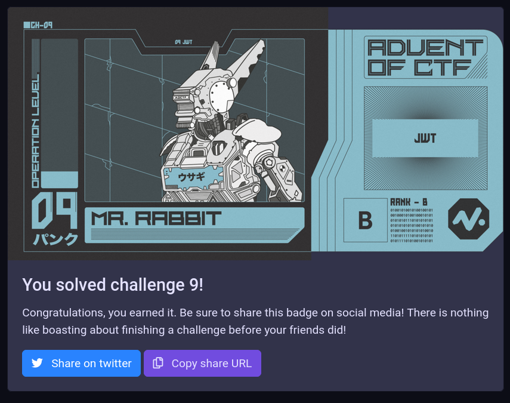

Advent of CTF - Challenge 9
“JWT”
Challenge
This has an added layer of complexity. There are several rabbit holes and a non-trivial bypass. What you will learn:
- Read error messages
- Identify JSON structures in Base64
- JSON Web Tokens (JWT) and the NONE algorithm
- That session management is important
Solution
The description of the challenge already gives a big hint.
Can you find a way to get into the Naughty List Management System as an admin?
This implies that there is some form of authentication or authorization mechanism to be bypassed. This is also a rabbit hole; there is no way to log in as an admin. But there is no way given to find a username or password.
Trying anything will result in an error message. It reads Hey user your password is incorrect. Unless you entered the user user you might find it odd that it is listed. It actually is a password reminder and does show the working username / password combination.
Logging in with the username user and password incorrect will lead to an empty page. It literally says that the naughty list is currently empty. However, remember that the description was to login in as an admin user, perhaps there is a way to escalate privilege?
Looking around the application will yield nothing useful. The DevTools (F12), however, have something in the cookies. A field called token has an entry that starts with eyJ. Remember, from Challenge 2 that an encoded JSON structure will always start with eyJ.
Retrieving the full text shows the following Base64 string. It is a little bit different though, as there are . between segments. Throw it into CyberChef to fully decode it, either with From Base64 or From JWT (the latter does not always work for me).
eyJ0eXAiOiJKV1QiLCJhbGciOiJIUzI1NiJ9.eyJhdXRoIjoxMDk2MSwidGV4dCI6IkkgZG8gbG92ZSB hIGdvb2QgcHV6emxlLiIsInJvbGUiOiJ1c2VyIiwiaWF0IjoxNjA3MzY5NDU3fQ.yWR9bJ8F6E6_V3z krl7K85_pELFfR0AfuJlObepU9XQ
Once it is clear that it is a JSON Web Token (or JWT for short) it is also possible to use a specialized tool to work with it. The below screenshot shows the entire token in The JWT Debugger. I used it here to show the different parts based on colors.
Searching the internet for vulnerabilities related to JWT tokens will eventually bring you to an Auth0 article that details the NONE algorithm. It was an early failure in JWT in which an attacker changes the algorithm of a token to NONE, removes the signature, and updates data to its liking. As there is no algorithm to verify the integrity of the data, the new token is accepted as a valid token.
Using this approach the token can be manipulated. Below is the listing of the original token. When you try it a few times it becomes clear that auth in the payload is actually an incrementing number. This is the session id for the user. Only tokens for the correct session are accepted, so this operation has to be performed correctly, else the session will reset.
{"typ":"JWT","alg":"HS256"}
.
{"auth":10961,"text":"I do love a good puzzle.","role":"user","iat":1607369457}
.
SIGNATURE GARBLED DATA
In the payload the role has to be changed from user to admin. This will cause the user to escalate privilege. The signature part can entirely be removed as the alg can be set to NONE. The 2nd . is important however, so make sure it remains.
{"typ":"JWT","alg":"NONE"}
.
{"auth":10961,"text":"I do love a good puzzle.","role":"admin","iat":1607369457}
.
This new token has to be Base64 encoded again. An important thing to note is that JWT tokens do not allow the = character to be used, the padding has to be removed to form a valid token.
eyJ0eXAiOiJKV1QiLCJhbGciOiJOT05FIn0 . eyJhdXRoIjoxMDk2MSwidGV4dCI6IkkgZG8gbG92ZSBhIGdvb2QgcHV6emxlLiIsInJvbGUiOiJhZG1pbiIs ImlhdCI6MTYwNzM2OTQ1N30 .
Putting all the pieces back together will yield a new valid JWT token. This token elevates the privilege to admin for this specific session and removes the signature check. Put it back into the cookie using the DevTools.
eyJ0eXAiOiJKV1QiLCJhbGciOiJOT05FIn0.eyJhdXRoIjoxMDk2MSwidGV4dCI6IkkgZG8gbG92ZSBh IGdvb2QgcHV6emxlLiIsInJvbGUiOiJhZG1pbiIsImlhdCI6MTYwNzM2OTQ1N30.
Reloading the page will reveal the flag.
Grab your points and your badge.
 Go back to the homepage.